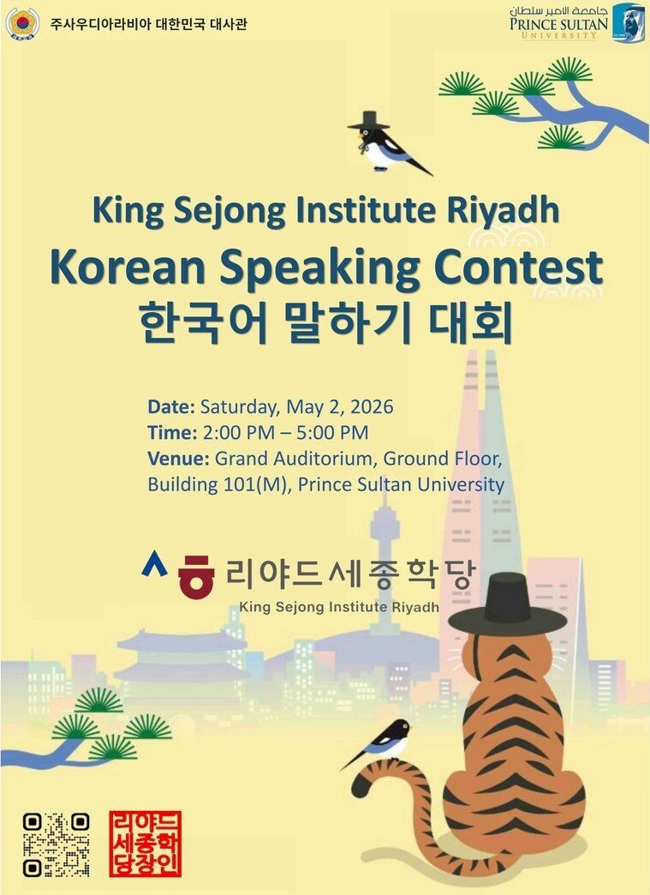
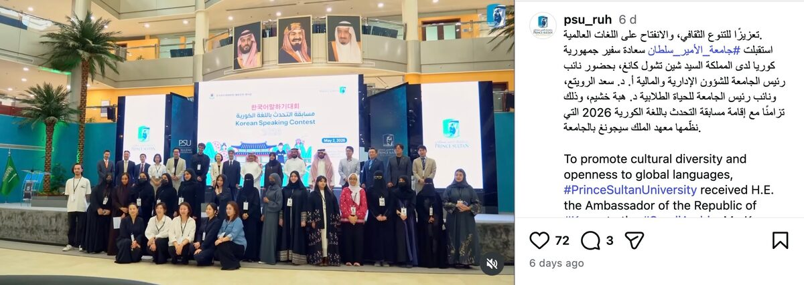
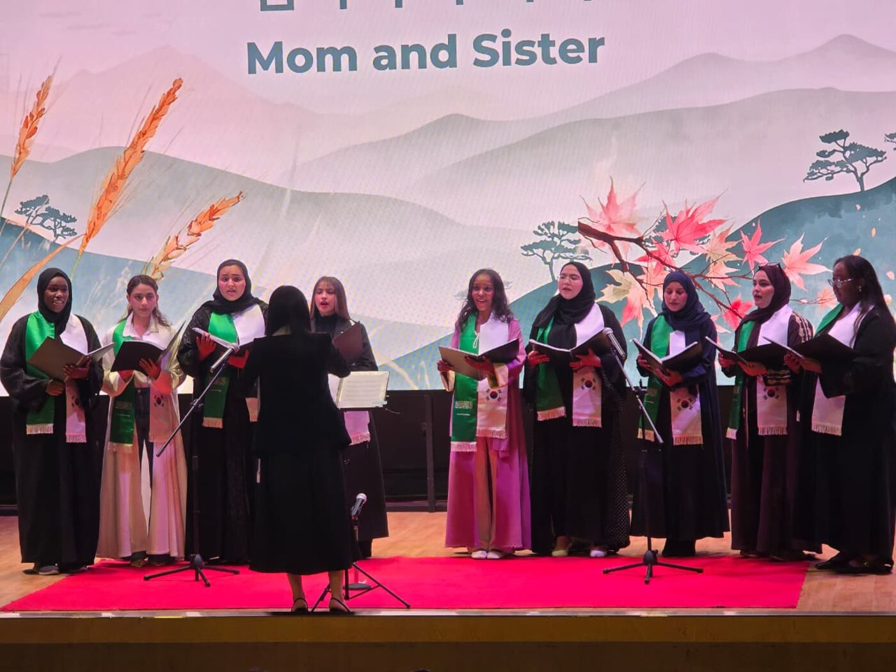
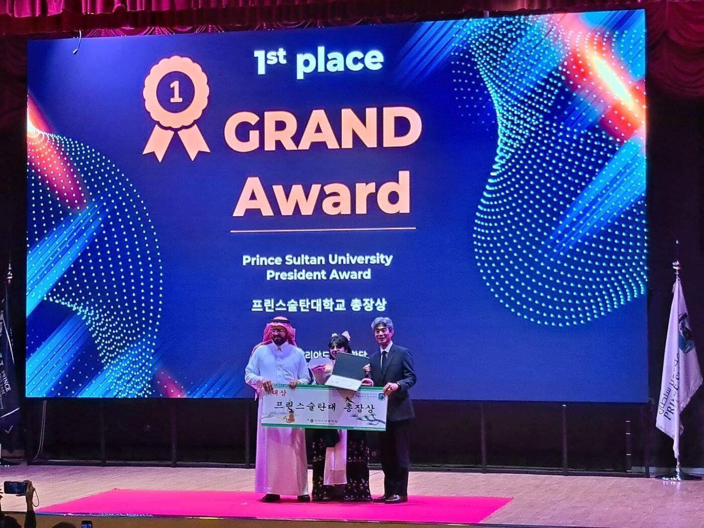
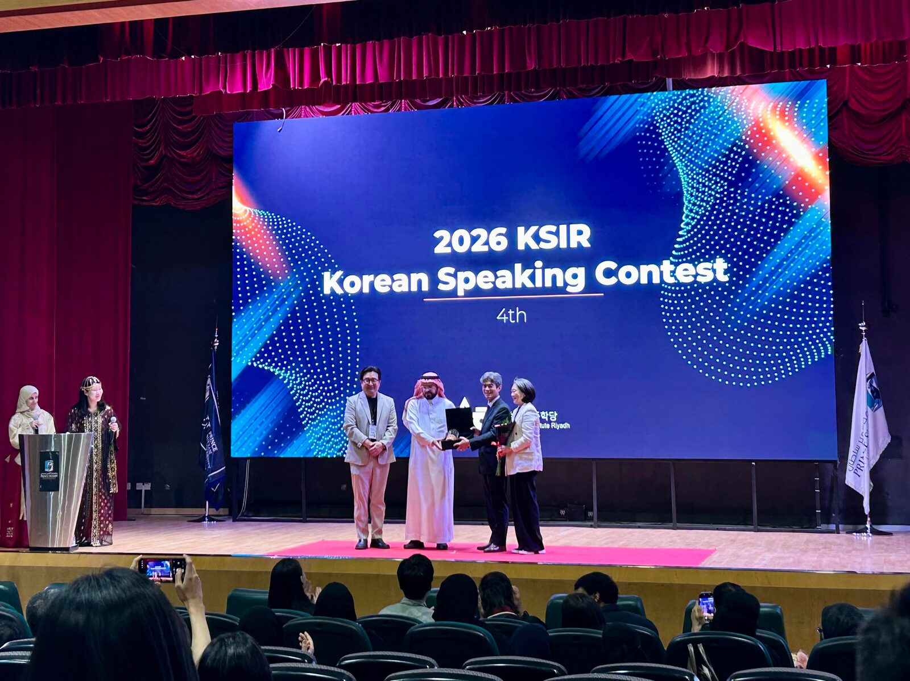

지난 5월 2일 사우디아라비아 리야드 프린스 술탄 대학교(Prince Sultan University, 이하 PSU)에서 '제4회 사우디 한국어 말하기 대회(The 4th Saudi Korean Speech Contest)'가 열렸다. 리야드 세종학당과 프린스 술탄 대학교가 공동 주최·주관하고 주사우디아라비아 대한민국 대사관이 협력한 이번 행사에는 삼성과 엘지(LG)를 비롯한 사우디아라비아 현지 한국 기업들도 후원사로 참여했다. 이들 기업은 참가자를 위한 시상품도 지원했다. 이날 행사에는 사우디아라비아 각지에서 예선을 통과한 참가자가 모여 한국어 실력을 겨뤘다. 통신원도 세종학당 문화교원으로 현장에 참석했다.

사우디서 열린 제4회 한국어 말하기 대회 포스터 — 출처: 리야드 세종학당
행사가 시작되기 전부터 본선 진출자들의 예행연습(리허설)이 이어졌다. 학생들은 무대에 올라 자신이 준비한 한국어 발표를 반복해 연습했고, 서로 발음을 점검하거나 마지막까지 원고를 확인하는 모습을 보였다. 대회장 곳곳에서는 한국어 인사말을 연습하는 목소리가 이어졌고, 참가자들의 긴장감과 기대감이 동시에 나타났다. 행사는 피에스유(PSU) 101동 500석 규모의 대강당에서 진행됐다. 올해 새롭게 부임한 강신철 주사우디아라비아 대한민국 대사를 비롯해 대학 관계자들과 한국 교민 사회 인사들도 참석했다.
행사에 앞서 참가자들과 관계자들은 대학 본관 귀빈실(VIP룸)로 이동해 피에스유(PSU) 총장단 및 학교 관계자들과 환담을 나눴다. 피에스유(PSU) 측은 공식 환영 행사도 마련했다. 대학 공식 사회관계망서비스(SNS)는 이번 대회를 "문화적 다양성과 세계적(글로벌) 언어에 대한 개방성을 확대하기 위한 행사"라고 소개하며 한국어 교육과 문화 교류의 의미를 강조했다. 이날 행사에는 피에스유(PSU) 대표로 이브라힘 알 감라스(Ibrahim Al-Ghemlas) 평생교육원장, 사드 알루와이타(Saad Al-Ruwaita) 행정·재무 부총장, 헤바 쿠샤임(Heba Khushaim) 학생처 부총장도 참석했다.

프린스 술탄 대학교 공식 소셜미디어에 올라온 대회 참가자 및 관계자 단체사진 — 출처: PSU 공식 소셜미디어(@psu_ruh)
"왜 한국어를 배우나요?" 사우디 청년들의 진심 담긴 발표
이번 대회 참가자는 '내 일상 속 한국어(Korean in My Daily Life)'와 '나는 왜 한국어를 배우는가(Why I am Learning Korean)'를 주제로 1~2분 분량의 한국어 발표 영상을 사전에 제출했고, 예선을 통과한 참가자 17인이 본선 무대에 올랐다. 참가자는 한국어를 배우게 된 계기와 일상 속 한국 문화 경험, 자신의 꿈 등을 한국어로 발표했다. 무대에 오른 참가자는 발표가 시작되자 또렷한 발음과 자연스러운 표현으로 객석의 집중을 이끌어냈고, 발표가 끝날 때마다 박수가 이어졌다. 심사에는 주사우디아라비아 대한민국 대사관 공사를 비롯해 한인회장, 민주평화통일자문회의 사우디지회장, 리야드 한국학교장, 대한무역투자진흥공사(KOTRA) 관장, 건설업협의회장, 지상사협의회장, 사우디 왕립예술원 교수 등 총 8명의 심사위원단이 참여했다. 심사위원들은 참가자들의 한국어 표현력과 전달력, 발표 내용 등을 종합적으로 평가했다.
한국 동요부터 케이팝까지, 세종학당 합창단 축하공연 눈길
순위 발표에 앞서 통신원이 지휘를 맡은 리야드 세종학당 소속 '코사(KOSA·Korean-Saudi)' 합창단의 축하공연이 이어졌다. 한국 문화와 음악에 관심 있는 사우디아라비아 및 중동 지역 학생들로 구성된 이 합창단은 2024년 제2회 한국어 말하기 대회 이후 올해까지 3년째 매년 축하공연 무대에 오른다. 이날 학생들은 한국어로 〈엄마야 누나야〉와 〈섬집아기〉를 돌림노래 형식으로 선보이며 맑은 화음을 들려줬고, 이어 최신 인기 케이팝 곡인 〈굿굿바이(Good Goodbye)〉와 〈골든(Golden)〉 무대까지 이어가며 현장 분위기를 주도했다. 공연이 끝날 때마다 객석에서는 박수와 환호가 쏟아졌다.

세종학당 소속 코사(KOSA) 합창단 단원 및 통신원 — 출처: 합창단 단원 가족 제공
"아버지 영향으로 한국에 관심"… 1위 차지한 메이(May)
공연 이후 이어진 시상식에서는 메이(May)가 1위를 차지했고, 라님(Raneem)이 2위, 기나(Ghena)가 3위에 이름을 올렸다. 우승자에게는 오는 10월 한국 방문 기회가 제공되며, 한국에서 열리는 세계 한국어 말하기 대회 참석을 위한 2차 예선에 사우디아라비아 대표로 참가할 기회 역시 주어진다.

1위를 수상한 메이(May) — 출처: 리야드 세종학당 제공
1위를 차지한 메이는 수상 소감에서 "어렸을 때부터 아버지가 한국에 관심이 많아 한국 이야기를 자주 들으며 자연스럽게 한국 문화에 관심을 갖게 됐다"고 말했다. 앞으로 한국어와 사우디를 잇는 가교 역할을 하겠다는 포부도 밝혔다. 현재 메이는 사우디아라비아에서 활발하게 활동 중인 아랍어-한국어 통역 인재이기도 하다.

시상식 이후 진행된 기념 선물 전달식. (왼쪽부터) 리야드 세종학당장 이태열 교수, 프린스 술탄 대학교 평생교육원장 이브라힘 알 감라스(Ibrahim Al-Ghemlas), 강신철 주사우디 대한민국 대사 및 배우자 — 출처: 통신원 촬영
시상식 이후에는 헤바 쿠샤임(Heba Khushaim) 프린스 술탄 대학교 학생처 부총장이 강신철 주사우디아라비아 대한민국 대사에게 기념 선물을 전달하는 시간이 마련됐다. 이후 관계자들은 함께 기념 촬영을 하며 행사를 마무리했다.
최근 사우디아라비아에서는 케이팝과 한국 드라마를 넘어 한국어 자체를 배우려는 관심도 높아진다. 세종학당을 중심으로 한국어 교육과 문화 프로그램 참여가 꾸준히 늘어나며, 한국어를 바탕으로 통번역 분야를 꿈꾸거나 한국 대학 진학을 준비하는 학생도 점차 증가한다. 단순한 어학연수를 넘어 정보기술(IT), 디자인, 미디어, 예술 등 자신의 전공 분야를 한국에서 더 깊이 배우기 위해 유학을 희망하는 학생도 증가하는 추세다. 이날 대회 역시 단순한 언어 경연을 넘어, 한국어를 통해 한국 문화를 이해하고 자신의 미래와 가능성을 직접 표현하려는 사우디아라비아 청년들의 열정을 확인하는 자리였다.
사진출처 및 참고자료
— 통신원 촬영
— 코사합창단 단원 가족 제공
— 프린스술탄대학교 공식 소셜미디어(@psu_ruh), instagram.com/psu_ruh
— 리야드 세종학당, ksi-riyadh.org